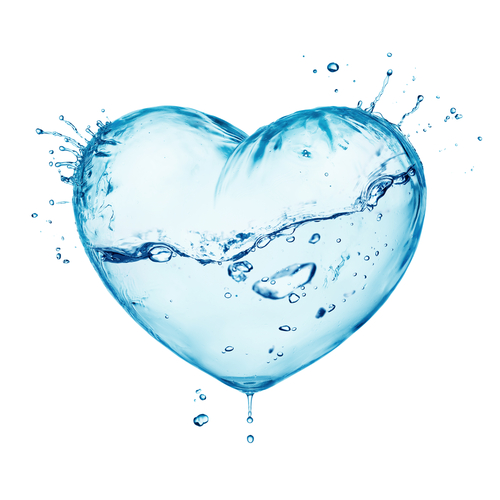
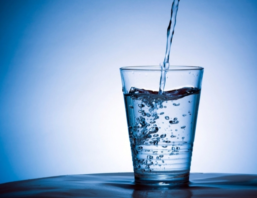
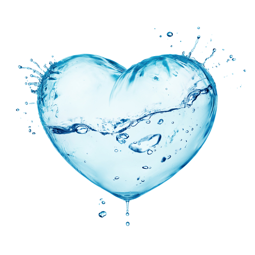
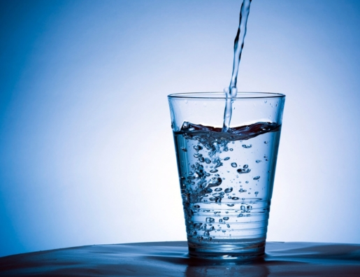

VODA I NJENA VAZNOST
Postoji jedna namirnica koju mi uzimamo zdravo za gotovo, ali čija važnost nadilazi važnost svih drugih. To je obična, čista voda, koju neki prezrivo nazivaju "česmovača". Ali, imajte u vidu da čovek može da gladuje 40 dana, pa je čak bilo eksperimenata i sa 100 dana gladovanja, ali bez vode ne može da izdrži ni 10 dana.
Nedovoljno unošenje vode postepeno i neprimetno menja fiziologiju organizma i dovodi do niza hroničnih degenerativnih promena tkiva i organa. Verovali ili ne, ali čak i takve bolesti kao što su čir na želucu, visok pritisak, holesterol, artroza, alergije i astma mogu biti posledice konstantne dehidracije.
Savremeni čovek živi u iluziji da ne može da dehidrira jer mu je voda uvek pri ruci - dovoljno je da okrene slavinu. Međutim, zanemarivanje čiste vode i njena zamena tzv. "tečnostima", kako mi volimo da nazivamo kafu, alkohol, razne "kole" i sokove, neumitno vodi dehidraciji, jer pomenuti napici ne mogu da zamene čistu vodu u organizmu. A njihovo stalno konzumiranje, nažalost, na kraju dovodi i do gubitka osećaja za žeđ, i do toga da čovek zameni osećaj žedji sa osećajem gladi, pa jede, umesto da pije vodu - što je pogubno po organizam.
Da bismo izbegli ove nevolje, potrebno je da ustanovimo svesnu disciplinu da pijemo 2 litra ili 8 običnih čaša vode dnevno, čak i ako mislimo da nismo žedni.
Kakvu vodu pijemo?
Naravno, čista izvorska voda bi bila najbolji izbor - kad bi nam bila dostupna. Na nesreću, u savremenim uslovima života ona to nije. Flaširana voda, čak i ako potiče iz najčistijih izvora, ima veštački ukus, koji joj daje sama ambalaža. Sa tim ukusom u nju, nažalost, dospevaju i makromolekuli plastike, što nije zdravo. Zato preporučujem da ipak koristite vodu iz česme, ali filtriranu ili struktuiranu na takav način da je to čini znatno zdravijom. Jedan od načina struktuiranja je zaleđivanje i ponovno odleđivanje, uz odlivanje određene porcije vode u kojoj su se zadržale štetne materije.
Drugi način, koji možda više odgovara mentalitetu savremenog čoveka koji nema uvek vremena da sprovodi dugotrajnije procedure, jeste se koriste impulsni magnetizatori, koji se jednostavno postave na slavinu i strukturišu vodu na isti način kao da je bila zaleđena i ponovo odleđena. Jedan od proverenih je Ojas polarizator vode švajcarske firme Sovana, i veoma je zadovoljavajuć, jer menja i kvalitet i ukus obične vode iz česme - naravno, nabolje.
Hrana sa visokim sadržajem vode i njena važnost !
Za optimalno funkcionisanje organizma neophodno je pravilno uzimanje tečnosti, posebno vode i osvežavajučih napitaka. Poznato je da je prisutnost vode na našoj planeti preko 70% i da je čovekov organizam takođe sačinjen od 70% vode. Da bismo održali svoje zdravlje, logično je da treba da uzimamo namirnice koje u sebi takođe sadrže veliki procenat vode (70%), a to su voće i povrće. Naučno je dokazano da je čovek kao biće plodojed i biljojed i da mu ni organi za preradu (vilica), a ni organi za varenje (želudac i creva) nisu predviđeni za konzumiranje mesa i mesnih prerađevina. Normalnom zdravom organizmu odraslog čoveka potrebno je 2,5 kg biljne hrane dnevno.
 Što se tiče samog unošenja vode u organizam, dnevno je čoveku potrebno 35 grama vode na kilogram težine. Vodu treba uzimati između obroka, a ako je neophodno, posle, a ne pre i u toku jela. Uzimanje vode u toku jela slabi naš organizam i razređuje želudačnu kiselinu neophodnu za pravilno varenje hrane. Međutim, ukoliko u toku dana uzmete dovoljnu količinu hrane sa visokim sastavom vode, pijaća voda i napitci vam neće biti neophodni u većim količinama. Kroz bubrege odrastao čovek izluči 2,2 L vode dnevno. Za regulaciju vode u organizmu važno je uzimati dovoljnu količinu soli, jer so vezuje vodu u organizmu. Odraslom čoveku prosečne težine neophodno je da sa hranom unese 3,5 g soli dnevno.
Pravilna i zdrava ishrana podrazumeva ograničeno, a po mogućnosti i potpuno odricanje od napitaka kao što su kafa, jaki čajevi, alkoholna pića, kao i vrlo retko uzimanje mleka, čokolade, sladoleda i slatkiša. Ukoliko se pije kafa, treba je piti isključivo posle podne, čajevi treba da budu biljni, a mleko, čokoladu, sladoled i slatkiše uzimati na prazan želudac. Vede (staroindijski sveti spisi) kažu: "Hrana je dah koji izdišemo; hrana je dah života koji udišemo". Zato su odnos i stav prema hrani i svest o neodvojivosti hrane od nas samih veoma važni. Način razmišljanja i svest da u svoj organizam unosimo život, energiju, vitalnost i pozitivne vibracije, opredeliće i naš izbor namirnica. Verovanje da smo zdravi, svesno izbegavanje stresa i uživanje u hrani, bitno utiču na celokupno zdravlje. Poštovanje hrane i obavljanje molitve ili meditacije pred svaki obrok pomoći će da se uravnoteže naše fizičke, emocionalne, mentalne i duhovne dimenzije. Estetsko serviranje hrane i prijatan ambijent takođe puno doprinose ukupnom pozitivnom efektu koji hrana ima u našem životu.
Postoji jedna namirnica koju mi uzimamo zdravo za gotovo, ali čija važnost nadilazi važnost svih drugih. To je obična, čista voda, koju neki prezrivo nazivaju "česmovača". Ali, imajte u vidu da čovek može da gladuje 40 dana, pa je čak bilo eksperimenata i sa 100 dana gladovanja, ali bez vode ne može da izdrži ni 10 dana.
Nedovoljno unošenje vode postepeno i neprimetno menja fiziologiju organizma i dovodi do niza hroničnih degenerativnih promena tkiva i organa. Verovali ili ne, ali čak i takve bolesti kao što su čir na želucu, visok pritisak, holesterol, artroza, alergije i astma mogu biti posledice konstantne dehidracije.
Savremeni čovek živi u iluziji da ne može da dehidrira jer mu je voda uvek pri ruci - dovoljno je da okrene slavinu. Međutim, zanemarivanje čiste vode i njena zamena tzv. "tečnostima", kako mi volimo da nazivamo kafu, alkohol, razne "kole" i sokove, neumitno vodi dehidraciji, jer pomenuti napici ne mogu da zamene čistu vodu u organizmu. A njihovo stalno konzumiranje, nažalost, na kraju dovodi i do gubitka osećaja za žeđ, i do toga da čovek zameni osećaj žedji sa osećajem gladi, pa jede, umesto da pije vodu - što je pogubno po organizam.
Da bismo izbegli ove nevolje, potrebno je da ustanovimo svesnu disciplinu da pijemo 2 litra ili 8 običnih čaša vode dnevno, čak i ako mislimo da nismo žedni.
Kakvu vodu pijemo?
Naravno, čista izvorska voda bi bila najbolji izbor - kad bi nam bila dostupna. Na nesreću, u savremenim uslovima života ona to nije. Flaširana voda, čak i ako potiče iz najčistijih izvora, ima veštački ukus, koji joj daje sama ambalaža. Sa tim ukusom u nju, nažalost, dospevaju i makromolekuli plastike, što nije zdravo. Zato preporučujem da ipak koristite vodu iz česme, ali filtriranu ili struktuiranu na takav način da je to čini znatno zdravijom. Jedan od načina struktuiranja je zaleđivanje i ponovno odleđivanje, uz odlivanje određene porcije vode u kojoj su se zadržale štetne materije.
Drugi način, koji možda više odgovara mentalitetu savremenog čoveka koji nema uvek vremena da sprovodi dugotrajnije procedure, jeste se koriste impulsni magnetizatori, koji se jednostavno postave na slavinu i strukturišu vodu na isti način kao da je bila zaleđena i ponovo odleđena. Jedan od proverenih je Ojas polarizator vode švajcarske firme Sovana, i veoma je zadovoljavajuć, jer menja i kvalitet i ukus obične vode iz česme - naravno, nabolje.
Hrana sa visokim sadržajem vode i njena važnost !
Za optimalno funkcionisanje organizma neophodno je pravilno uzimanje tečnosti, posebno vode i osvežavajučih napitaka. Poznato je da je prisutnost vode na našoj planeti preko 70% i da je čovekov organizam takođe sačinjen od 70% vode. Da bismo održali svoje zdravlje, logično je da treba da uzimamo namirnice koje u sebi takođe sadrže veliki procenat vode (70%), a to su voće i povrće. Naučno je dokazano da je čovek kao biće plodojed i biljojed i da mu ni organi za preradu (vilica), a ni organi za varenje (želudac i creva) nisu predviđeni za konzumiranje mesa i mesnih prerađevina. Normalnom zdravom organizmu odraslog čoveka potrebno je 2,5 kg biljne hrane dnevno.
 Što se tiče samog unošenja vode u organizam, dnevno je čoveku potrebno 35 grama vode na kilogram težine. Vodu treba uzimati između obroka, a ako je neophodno, posle, a ne pre i u toku jela. Uzimanje vode u toku jela slabi naš organizam i razređuje želudačnu kiselinu neophodnu za pravilno varenje hrane. Međutim, ukoliko u toku dana uzmete dovoljnu količinu hrane sa visokim sastavom vode, pijaća voda i napitci vam neće biti neophodni u većim količinama. Kroz bubrege odrastao čovek izluči 2,2 L vode dnevno. Za regulaciju vode u organizmu važno je uzimati dovoljnu količinu soli, jer so vezuje vodu u organizmu. Odraslom čoveku prosečne težine neophodno je da sa hranom unese 3,5 g soli dnevno.
Pravilna i zdrava ishrana podrazumeva ograničeno, a po mogućnosti i potpuno odricanje od napitaka kao što su kafa, jaki čajevi, alkoholna pića, kao i vrlo retko uzimanje mleka, čokolade, sladoleda i slatkiša. Ukoliko se pije kafa, treba je piti isključivo posle podne, čajevi treba da budu biljni, a mleko, čokoladu, sladoled i slatkiše uzimati na prazan želudac. Vede (staroindijski sveti spisi) kažu: "Hrana je dah koji izdišemo; hrana je dah života koji udišemo". Zato su odnos i stav prema hrani i svest o neodvojivosti hrane od nas samih veoma važni. Način razmišljanja i svest da u svoj organizam unosimo život, energiju, vitalnost i pozitivne vibracije, opredeliće i naš izbor namirnica. Verovanje da smo zdravi, svesno izbegavanje stresa i uživanje u hrani, bitno utiču na celokupno zdravlje. Poštovanje hrane i obavljanje molitve ili meditacije pred svaki obrok pomoći će da se uravnoteže naše fizičke, emocionalne, mentalne i duhovne dimenzije. Estetsko serviranje hrane i prijatan ambijent takođe puno doprinose ukupnom pozitivnom efektu koji hrana ima u našem životu.
Nasi saradnici

Dusan Petrovic
Dr.Mr Nutricionista
VMA

Nikola Delibasic
Fiziolog
VMA

Nevena Obradovic
Life Couch
VMA